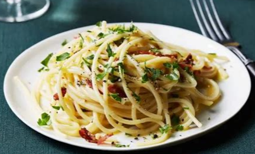

|  |
- 10 slices Bacon (cut into 1/2-inch pieces)
- 8 ½ cups Water (divided)
- 4 cloves Garlic (minced)
- 1 pound Spaghetti (or linguine)
- 1 ¼ cups Parmesan Cheese (finely grated, plus more for serving, 2 oz)
- 3 Large Eggs
- 1 Large Egg Yolk
- 1 teaspoon each Salt And Pepper (or to taste)
- add Fresh Parsley (chopped, for garnish)
|